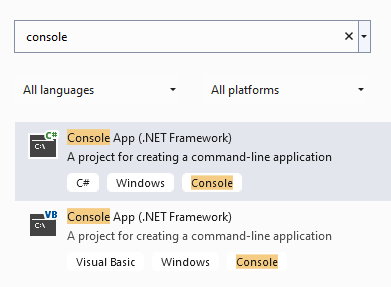
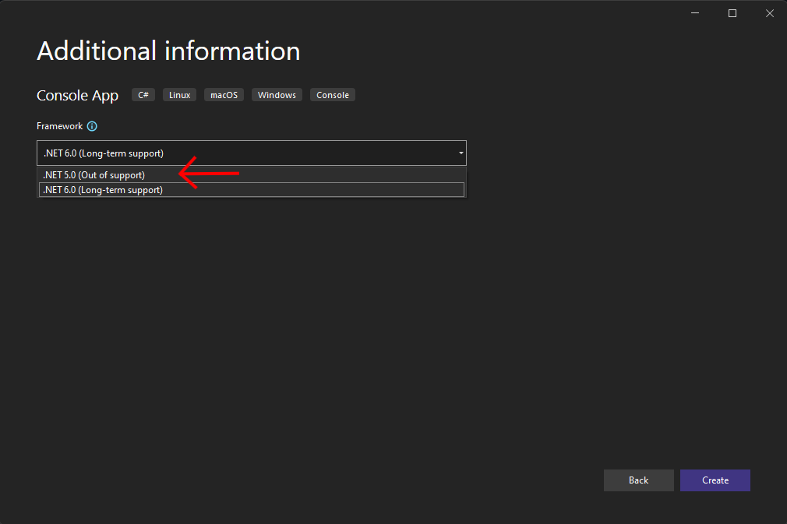
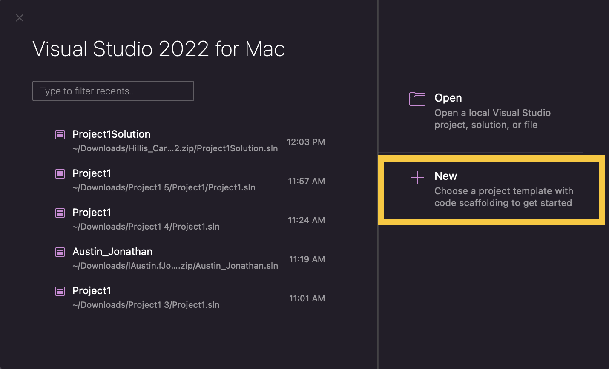
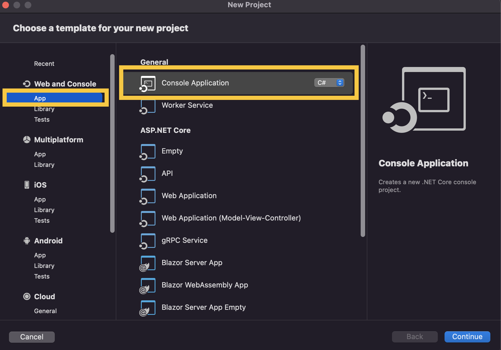
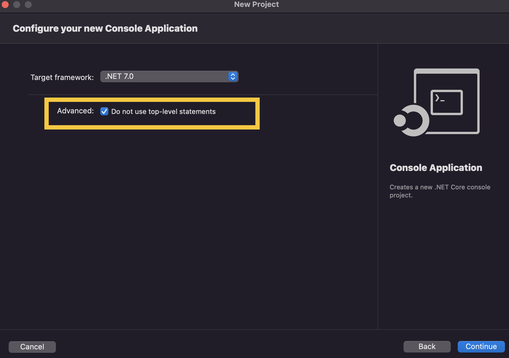
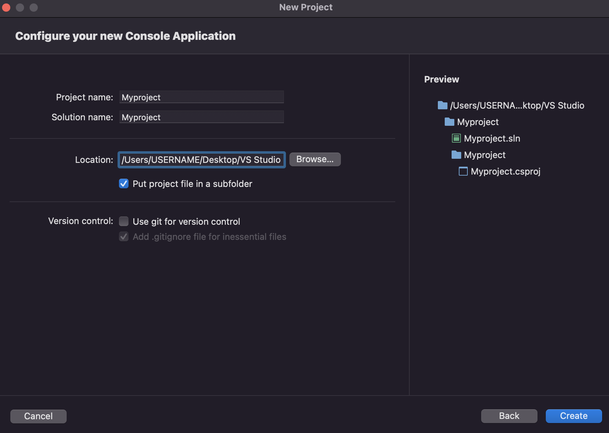
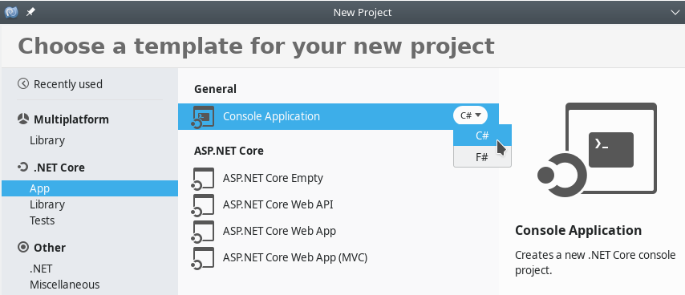

Your First Program
May 22, 2024 (01:30:57 PM)
This lab serves multiple goals:
- To teach you how to edit an existing program,
- To show you how to create a new program “from scratch”,
- To understand how to display characters, strings, and escape sequences on the screen,
- To read and understand error messages from your IDE,
- To understand how the renaming of projects and solution works,
- To explain how to explore C# documentation,
- To explore new useful IDE features.
Your First Program
Editing Existing Program
Reusing and Editing
Download InitialSolution.zip and save it onto your computer.
Unzip the program file. You can refer to our small guide on manipulating archives. Be careful as some file explorers will simply preview the (zip) archive if you simply double-click on it, but most IDEs will not accept a file if it has not been actually extracted / unzipped!
Renaming
Open the InitialSolution file that
you just extracted in your IDE.
Renaming the Solution
Use your IDE to rename this solution:
- Right-click on
InitialSolution(in “Solution Explorer”, “Explorer”, or even “Solution”). - Select “Rename” (it can be under “Edit”), and then rename the
solution to
EditedSolution. - What change(s) do you notice in your IDE?
- Can you still build and debug your program?
- Look in your file system where you unzipped the solution earlier.
Did the name of the project directory change? Did the name of the
.slnfile change?
Do not rename a solution outside your IDE; always use an IDE to rename.
Renaming C# project files requires more than simply changing a file name. By using an IDE to perform the renaming, all references to the name will be updated.
Renaming the Project
Next use your IDE to rename the project:
- Right-click on
InitialProject. - Select “Rename” , and then rename the solution to
EditedProject. - What change(s) do you notice in your IDE?
- Can you still build and debug your program?
- Look in your file system where you unzipped the solution earlier.
Did the name of the project directory change? Did the name of the
.csprojfile change?
Editing
We will now change (edit) our EditedSolution solution.
In
Program.cs:- replace
"Welcome to the lab portion of CSCI 1301!" - with
"This is my first program.".
- replace
Build and run the program. Do you notice any change(s)?
Insert a new line after the existing
Console.WriteLinebut before the first close brace (i.e.}) and paste the following:Console.Write("This is my second message.");Build and execute the program. Do you notice any change(s)?
Insert another new line after the one you just created, and paste the following:
Console.Write("This is my third message.");Build and execute the program. Do you understand the difference between
WriteLineandWrite?Insert another new line after the one you just created, and paste the following:
Console.Write("\t This is my fourth message.");Build and execute the program. Do you understand what
\tis doing?Insert another new line after the one you just created and paste the following:
Console.Write("\n This \n is \n my fifth message.\n");Build and execute the program. You should see something like this:
This is my first program. This is my second message.This is my third message. This is my fourth message. This is my fifth message.Do you understand what
\nis doing?Have a look at escape sequences, and edit your program by adding a statement that displays the
\and the"characters.Add a comment (using
//or/*and*/) in your program.
Make a back up of what you just did. Upload EditedSolution to your remote backup, or
copy it onto your thumb drive. After saving the backup, close your IDE
and make sure you can still open the solution. Redownloading and
reopening solutions is a good way of making sure that your backup is
correct.
Creating Your First New Project
This time you will not be given a project to load or to copy. You will start from scratch. If your IDE is currently open, exit your IDE application. Next, create a new folder for this lab in your file explorer or backup directory.
Starting from a Template
We will first create a new C# project using the template for a “Console App” (we give first a general guidance, and then some details that are specific to particular IDE / operating systems combinations):
Launch your IDE
After the IDE launches, look for an option to create a new project. The exact wording varies between different IDEs, but look for one of the following:
Create a new projectorNeworNew Solutionin the launch screen
File > New > Projectin the IDE menuFile > New Solutionin the IDE menu
Look for the “Console Application” option, and check that the associated language is C# (cf. below).
If multiple frameworks are offered, make sure you pick the right one (cf. below).
Enter
MyFirstProjectas the name of the project.Enter
MyFirstSolutionas the name of the solution.For the location or solution directory, choose a good place to save your solution. The best place would be the folder you created for this lab.
Click
Create.
Make sure you review the information in the following section that are relevant for you, and then answer the question in the last section.
Picking the Right Framework and Other Specificities
Interfaces change, and writing a “universal guide” is not an easy task, so we include some additional indications for specific IDE / operating system below:.
For Visual Studio on Windows
You may see multiple options for a framework (.Net Framework or .NET Core), and you can choose either as it does not make a difference for this class. However, you should make sure that you pick a .NET version strictly less than 6 (ex. NET 5.0) if possible.
You should see something like:

Pick the first item, which is for C#. When selecting the framework, make sure you are using .NET 5.0 or lower.

For Visual Studio on macOS
On macOS, follow this method:
  It is important that you do not use top-level statements (so, this following box should be checked):  Finally, make sure you enter the location, project name and solution name correctly: 
For Monodevelop
After clicking on File > New Solution,
you will be prompted with a screen similar to this one:

Under “.NET Core”, pick the “App” category, and then click on “Console Application” under “General”. Make sure you pick the C# programming language.
Questions
Once your project was created, answer the following:
A source code file appeared in the main window of your IDE. Compare this code with the code you studied previously. How are they different? How are they the same?
In your file system, navigate to the directory where you stored your project. Open the project directory and compare
MyFirstSolutionto theEditedSolutionproject you worked on earlier. How are they different? How are they the same?Try to compile
MyFirstSolution. Did the compilation succeed?Execute
MyFirstSolution. What happened? Compare what happened to what happened when you executed theEditedSolutionproject.
Editing the Template
Now you will start writing your own code. We’ll start by writing a very familiar instruction to display a message on the screen.
Before editing your code, make sure you can actually compile it first!1.
Place the cursor inside the
Mainmethod, afterstatic void Main(string[] args)and the open brace (i.e.{).Create a new line.
Type
Console, and then pause.After a short moment, an auto-completion feature that displays suggestions and messages should display. This is a common IDE feature to help the programmer. You’ll probably end up using it a lot, but let’s not worry about it for now.
Type in
.WriafterConsole(do not forget the period!) and notice the good suggestions. You actually want to writeWriteLine! Either finish writingWriteLineor select it from the menu that appears.Now, type an open parenthesis (i.e.
(), and notice that a close parenthesis (i.e.)) is added automatically.Type a
stringof your choice between those two parentheses. You can type something like"This is my first message", but do not forget the quotes.At this point, your
Mainmethod should look like this:static void Main(string[] args) { Console.WriteLine("This is my first message!") }Compile (build) your program.
Oh no, something went wrong! Can you fix this problem?
Once you can compile your program without errors, execute it.
Make a backup of your project.
Exploring the Documentation
The documentation for C# is packed with useful information, and
efforts are made to make it accessible to beginners. The goal of this
exercise is to help you realize that it contains answers to questions
that you may have asked yourself like “what is a solution?” or “what
does the namespace keyword
do?”
The documentation for C# is at https://docs.microsoft.com/en-us/dotnet/csharp/. To get started, have a look at “Introduction” at https://docs.microsoft.com/en-us/dotnet/csharp/language-reference/language-specification/introduction/, and answer the following:
- What C# language feature is responsible for reclaiming unused memory?
- What file extension is used by C# source code files?
- Can you list 3 different C# data types?
C# programs often use namespaces as a way of organizing large code
projects, and your IDE may create a namespace when you
create a new program. Read the page at https://docs.microsoft.com/en-us/dotnet/csharp/programming-guide/namespaces/.
Do you know an example of a namespace that we have used?
More About Displaying Characters on the Screen
- Create a new project.
- Edit the
Mainmethod so that when compiled and executed, your program displays the following on the screen:
!
!!!
!!!!!!!We will now use the “Find and Replace” feature of your IDE. Look for it in the top menu of your IDE, typically
Edit > Find and Replace > Find in FilesorEdit > Find > Replace.In the panel that appears, enter the following:
- (Find what)
! - (Replace with)
*
- (Find what)
Hit “Replace All”, and note the modifications in your program.
As you can see, this is a really useful feature of your IDE, but it is also a really dangerous one. If you were to replace all the
*characters with!in all the programs we have written so far, what could possibly go wrong?
If you are using Monodevelop and are prompted with the message
Your project does not reference ".NETFramework,Version=v4.7" in the "TargetFrameworks" property of your project file and then re-run NuGet restore.Then, do the following: in the project in monodevelop, right click on the project, go to options, go to general, and change the target framework to the appropriate framework version described in the error. Clean the solution, and then go to the project’s folder. Delete both the bin and obj folders. Build solution and run it.↩︎